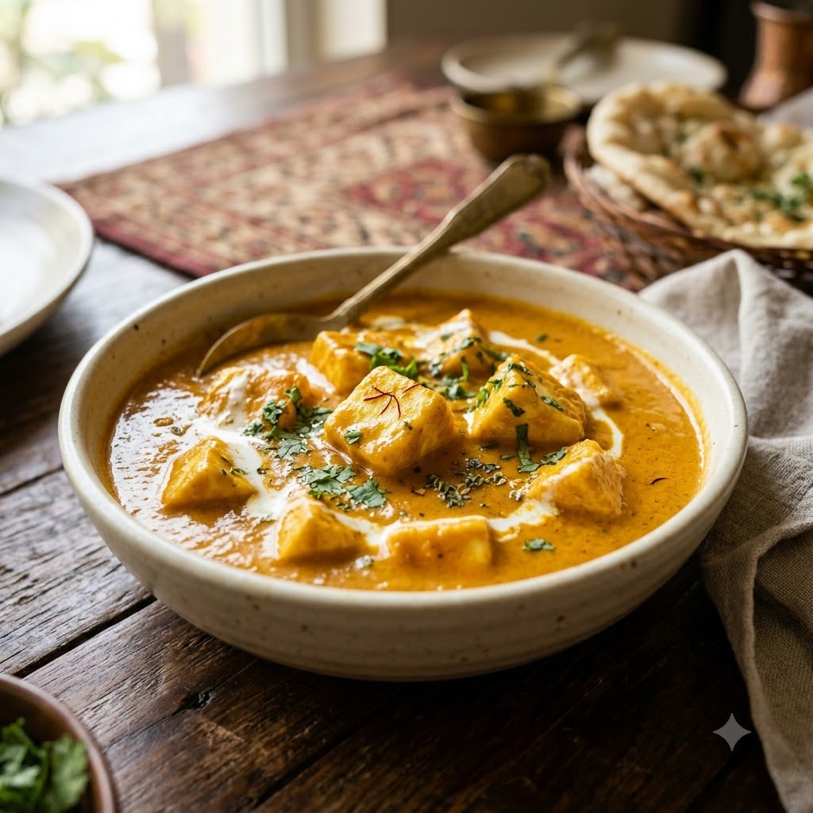

Shahi Paneer

Shahi Paneer
Chef Magic – Sauté Auto 22 min — Serves 4
Gluten-Free • Vegetarian • High-Protein • Mughlai
Ingredients
- 200g paneer, cubed
- 1 onion, roughly chopped
- 15 cashews, soaked
- 1 tomato, chopped
- 1 tbsp ginger-garlic paste (adrak-lehsun paste)
- 1/2 tsp garam masala
- 1/4 tsp nutmeg (jaiphal) powder
- 3 tbsp cream
- 2 tbsp ghee
- 1 tsp sugar
- Salt to taste
Method
1Add ghee to the jar; select Sauté (Speed 2–4, ~130–160°C) and cook the onion for 5 minutes until soft.
2Add soaked cashews, tomato and ginger-garlic paste; cook for 6 minutes, then select Whisk/Blend (Speed 8–10) to purée smooth.
3Return to Sauté (Speed 1–2, ~100–110°C); add garam masala, nutmeg, sugar and salt, and simmer for 5 minutes.
4Gently fold in the paneer cubes and cream; sauté 3 minutes just to warm through.